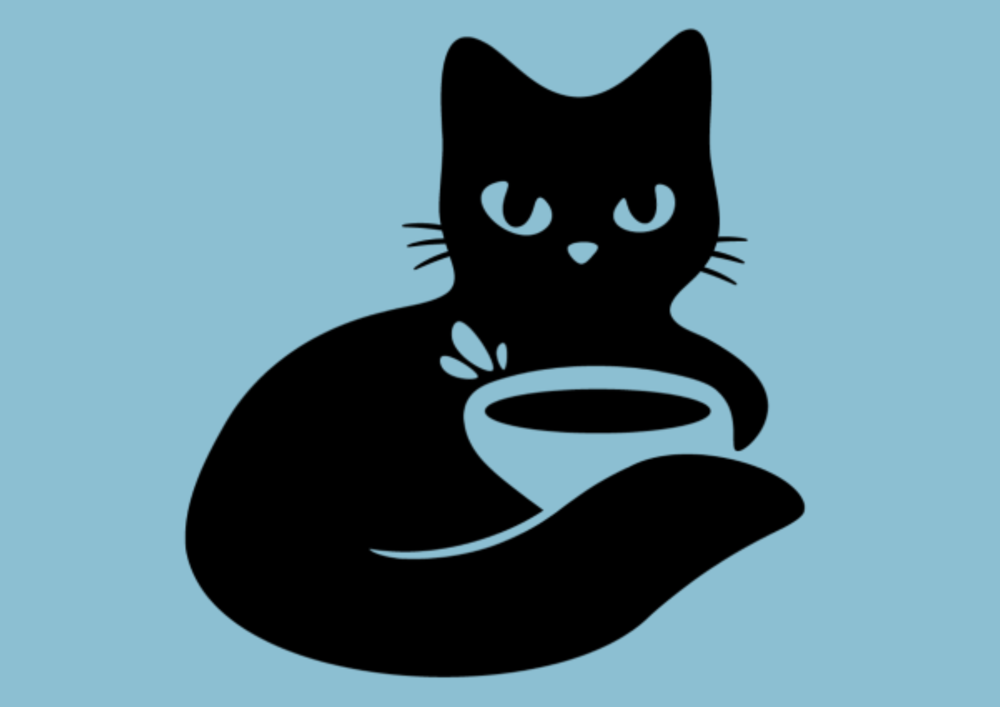
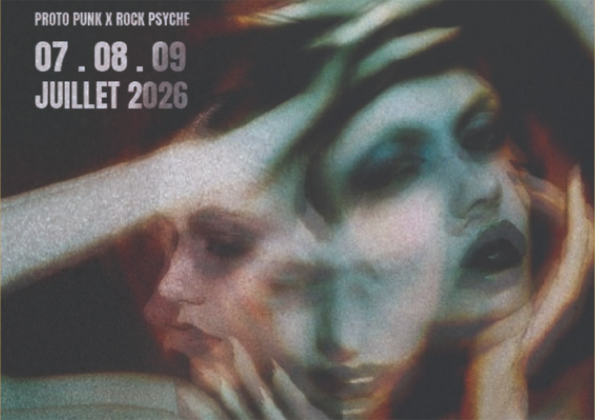
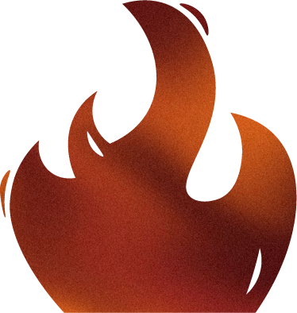
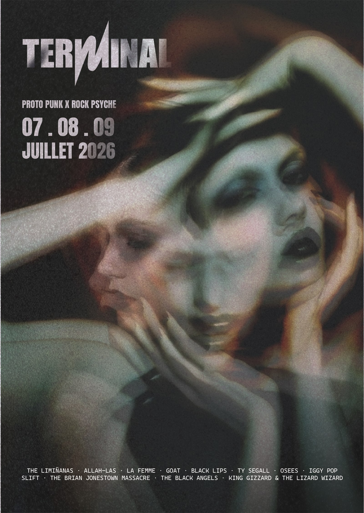
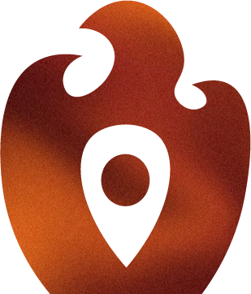
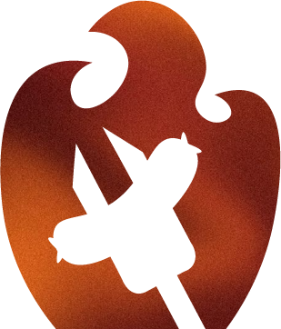
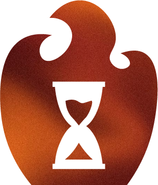

← Tous les projets
Illustration et iconographie
Le Terminal
Affiche d'un festival de musique
Un visuel généré par intelligence artificielle, puis composé et texturé sur Illustrator. Une affiche pensée dès le départ pour se décliner sur d'autres formats, complétée d'une série de pictogrammes.

Le brief
Une affiche pour un festival fictif
Créer l'affiche d'un festival de musique fictif, dont le visuel phare devait être généré par intelligence artificielle. Deux contraintes structuraient l'exercice : le visuel serait décliné ensuite sur plusieurs supports, il fallait donc penser son adaptation à des formats différents dès la génération. Et il devait rester purement visuel, sans aucune information textuelle incrustée.
Un visuel seul
Aucun texte dans l'image : le message viendra par-dessus, à la composition.
Déclinable
Cadrage et composition pensés pour survivre au changement de format.
Cohérent
Une direction artistique tenue, du visuel jusqu'au dernier pictogramme.
La démarche
Écrire pour faire naître une image
Tout s'est joué dans la formulation. J'ai travaillé les prompts sur trois modèles, Claude, ChatGPT et Gemini, en comparant ce que chacun comprenait de la même intention. Pinterest a servi en amont, pour poser des références visuelles précises avant même d'écrire la première instruction. Chaque itération resserrait la description : l'ambiance, la lumière, la matière, le cadrage. C'est cette précision qui fait la différence entre une image générique et une image qui tient l'affiche.
Outils


La composition
Du visuel à l'affiche
Le visuel généré n'était qu'un point de départ. Tout le reste a été construit sur Illustrator : la typographie, le logo du festival, la hiérarchie de l'information. J'y ai superposé plusieurs calques de textures pour donner du relief à l'image et casser le lissé caractéristique des visuels générés. C'est ce grain qui rend l'affiche crédible en impression.
Outils




L'iconographie
Trois pictogrammes, une seule main
Trois pictogrammes complètent l'affiche : l'accès, le bar et la restauration, les horaires. Ils reprennent la silhouette pleine et le dégradé chaud du visuel principal, pour qu'on les lise comme appartenant au même festival. La cohérence se joue à deux niveaux : entre les icônes elles-mêmes, et entre elles et la direction artistique.
Outils



Le mot de la fin
Ce que le projet m'a appris
Ce projet m'a surtout appris à mieux me servir de l'intelligence artificielle. Écrire un prompt, ce n'est pas lancer une commande et attendre : c'est décrire une intention avec assez de précision pour que l'image revienne juste, puis recommencer en corrigeant ce qui manque. Côté Illustrator, j'ai gagné en aisance sur le travail de la texture : la gestion des calques, et surtout les masques d'écrêtage et les masques d'opacité, qui permettent d'intégrer une matière directement dans une image ou dans du texte vectorisé. C'est ce qui donne du relief à l'affiche et l'éloigne du rendu trop lisse d'un visuel généré.
Projet suivant